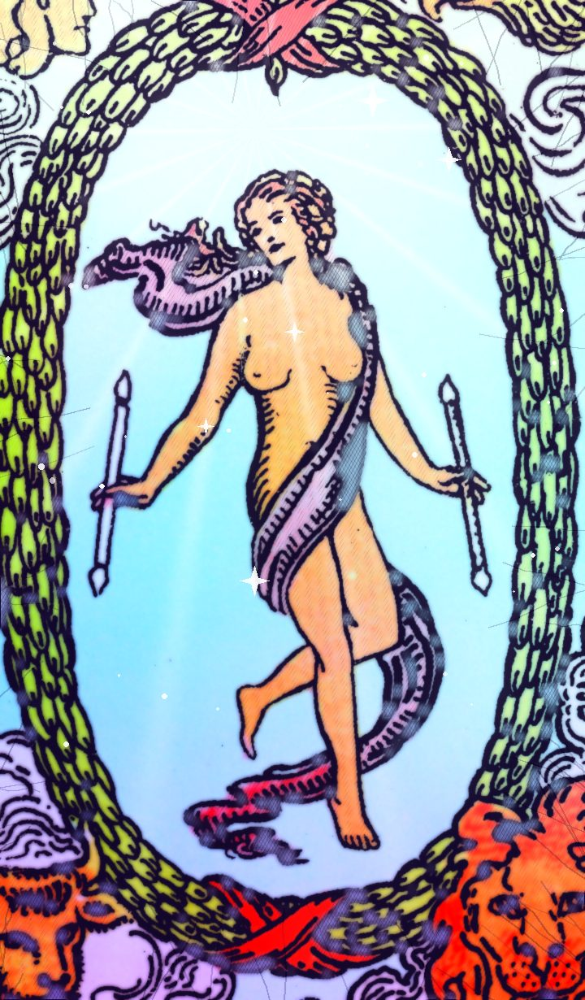

| Number | XXI |
|---|---|
| Element / planet | Saturn |
The World tarot card meaning: love, career and advice
| Keywords · Upright | fulfilment, achievement, completion, travel |
|---|---|
| Keywords · Reversed | something unfinished, shortcuts, lack of closure |
Upright
The circle is complete. The World is achievement, fulfilment and the happy ending of a long cycle. Also travel and wide horizons.
Reversed
One last step is missing to close the circle. Don't leave it halfway.
Love
A full, mature relationship, or the arrival of what you were waiting for.
Career and money
Goals reached, projects finished, international work.
Advice
Finish what you started and celebrate it.
Yes or no?
It's a “yes” card. Reversed, the answer softens to “maybe”.
Past, present and future
In the past: Some fulfilment has already shaped your path. Look at what it taught you.
In the present: Right now it's about fulfilment and achievement. That's the energy of the moment.
In the future: A time of travel is coming. Get ready to welcome it.
Frequently asked questions
What does The World mean in tarot?
The circle is complete. The World is achievement, fulfilment and the happy ending of a long cycle. Also travel and wide horizons. Finish what you started and celebrate it.
Is The World a yes or no card?
It's a “yes” card. Reversed, the answer softens to “maybe”.
What does The World reversed mean?
One last step is missing to close the circle. Don't leave it halfway.